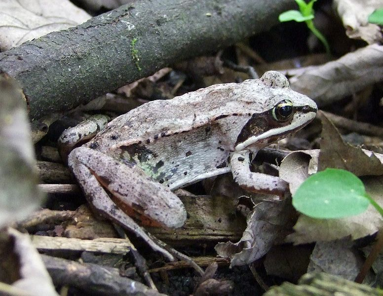

Tunguska Nature Reserve is in a Siberian Taiga biome and ecosystem (Russian Ministry of Natural Resources, 2011).
The location of the nature reserve is also extremely remote. The nearest city is Krasnoyarsk, Russia a distant 470
miles away from the protected area. This allows for wildlife to move freely in the region and keep the vast Taiga
biologically diverse.
The below zero temperatures of the Taiga require a unique type of wildlife in this area. Species have unique ways to combat the weather.
See the below descriptions of the plants and wildlife for more info!
The reserve is host to a variety of mosses, gymnosperms, angiosperms, cyclostomes, abyssal, and fern-shaped plants. Forests occupy over 70% of the area of the protected area with most being formed by pine trees and the Siberian larch (Russian Ministry of Natural Resources, 2011). The brush along the forest floor mostly consists of blueberry, juniper, willow, and lingonberry (Wild Russia, 1995). A swamp area is also located in the protected area. The bog vegetation mostly includes small birch.
The reserve wildlife must have the ability to survive the winter months of central Siberia. Temperatures can range from -38 degrees Fahrenheit to -47 degrees Fahrenheit in the winter months (USA Today, 2018). Primary inhabitants of the region are Siberian Wood Frogs and Reindeer. Wood Frogs have an incredible ability to tolerate their blood and body tissues freezing and still live (Storey, 1984). The Reindeer travels in herds and is a migratory species with special spade-like hooves that allow it to traverse the Siberian snow (Dutfield, 2018). Tunguska is also home to some of the rarer Peregrine Falcons (IUCN, 2019).

{kind=link}
{kind=link}